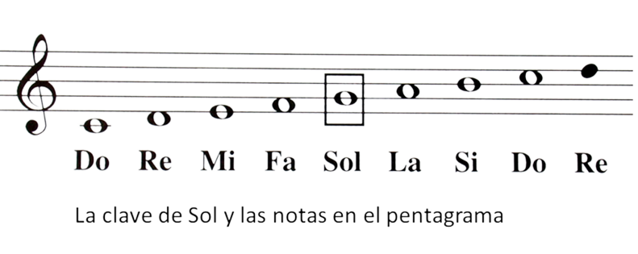

¿Cuales son las notas musicales?
Ahora siguen: Las notas musicales, son los símbolos que representan los sonidos en la música. Hay siete notas principales: Do, Re, Mi, Fa, Sol, La, Si. Se representan en el pentagrama por su altura y duración. Son la base de la escritura y la interpretación de la música.
En la música, solo hay 7 notas, pero es posible modificar ligeramente su afinación utilizando alteraciones. Estas alteraciones se conocen como sostenidos (#) y bemoles (b), y se colocan a la derecha de una nota y en su posición correspondiente. Por ejemplo, si tenemos una nota Do en el tercer espacio de la clave de Sol, un sostenido o bemol se colocaría en la misma altura:
Estas dos modificaciones afectan la afinación de una nota al variarla en un semitono. Al aplicar un sostenido, la nota se eleva en un semitono, mientras que al utilizar un bemol, la nota disminuye en un semitono. Por lo tanto, la nota que no tiene ninguna de estas modificaciones se considera una nota "natural".
